Visualizing Time...
Sketch 1
With this first sketch I wanted to get the hand of javascript, html and css. I (wrongly) assumed that making a wall clock where the hour, minute, and second hand would be on separate faces would be a simple warmup. As you can see, it definitely was not. I had a very hard time with getting the hands to rotate around different axis while also maintaining the correct length.
Sketch 2
With this second sketch I wanted to visualize time in a different way. The concentric circles correspond to the hour while the rotating wedge corresponds to the minute. The outermost circle corresponds to time 1 and the innermost to time 12. (Time is sped up to show the movement). I learned how to dynamically fill in differnt sections as well as how to use the lineTo method a little better.
Sketch 3
Finally, for my last sketch I wanted something a bit more abstract. The horizontal red lines correspond to the hour which begins at the top of the screen at hour 1 and end with the longest bar at the bottom corresponding to hour 12. The bar on the right corresponds to minutes and slowly grows downwards until reaching the very bottom at which point a new horizontal bar appears. (Time is sped up to show the movement).
On-paper Sketches
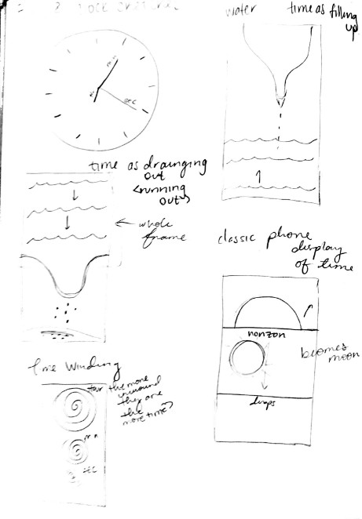 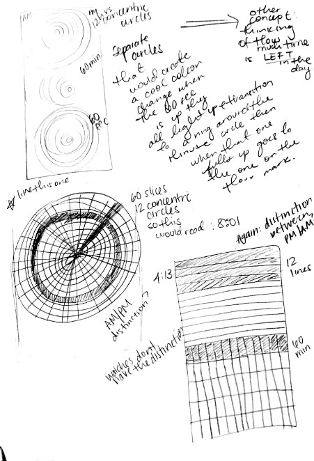 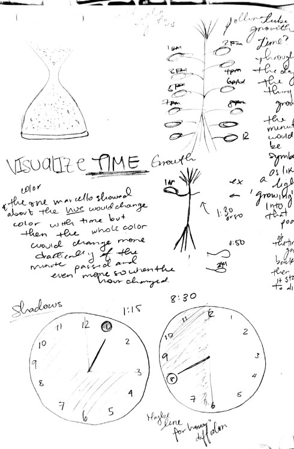 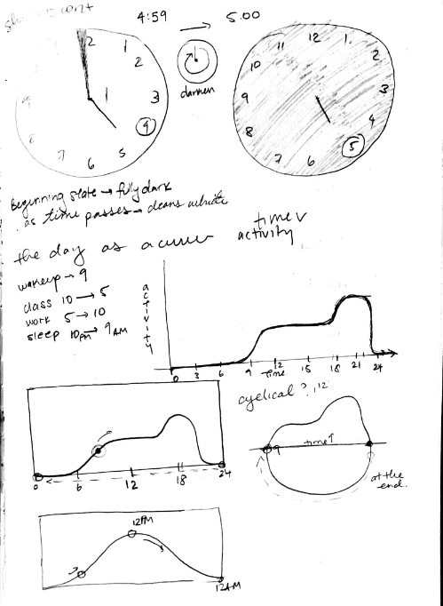 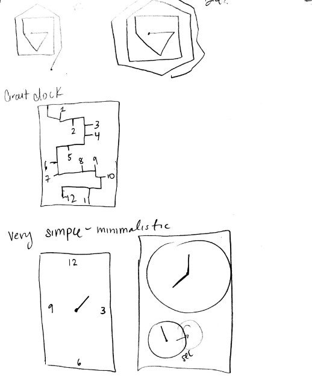 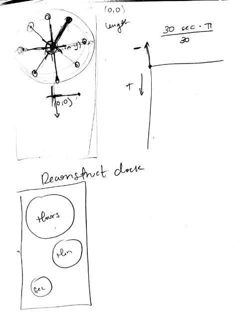 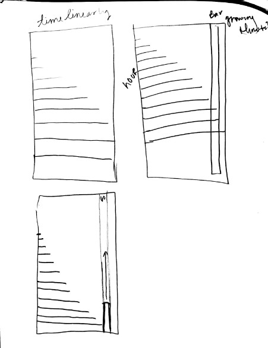
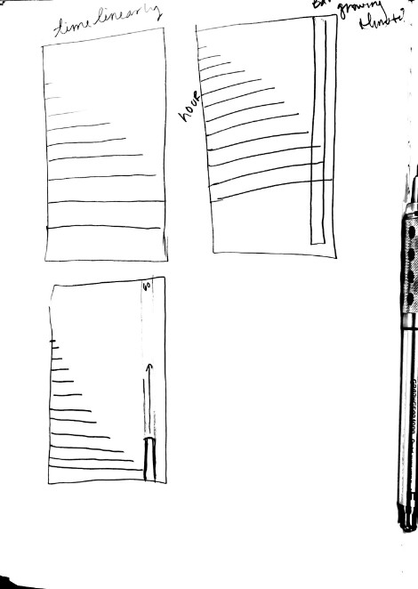
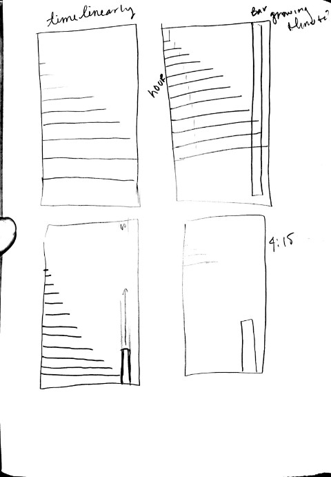
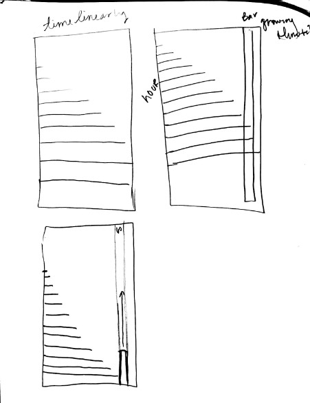
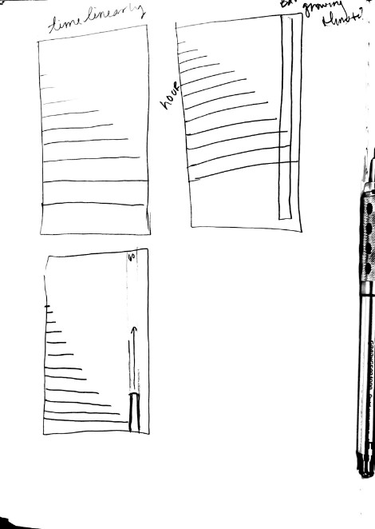
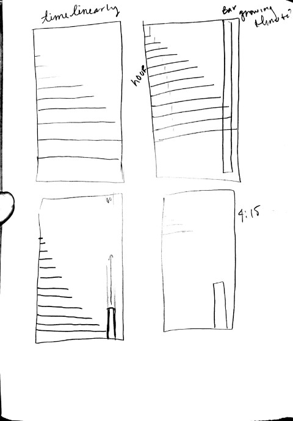